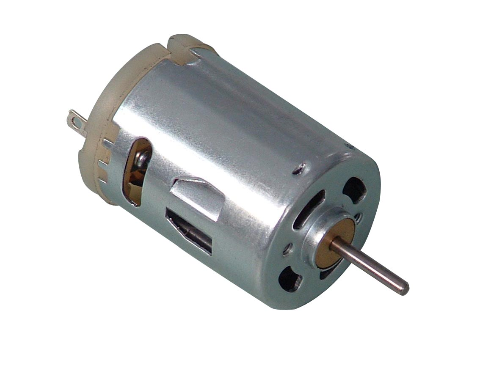

I'm a 2nd year undergraduate student of the department of Aerospace Engineering enrolled in its B.Tech cource. I am a boarder of Pandit Madan Mohan Malaviya Hall of Residense. I'm from Guntur. My Hobies are playing cricket, Android Software development, playing computer games.
In practice no transformer is ideal. In this lesson we shall add realities into an ideal transformer for correct representation of a practical transformer. In a practical transformer, core material will have
One of the major goals of this lesson is to explain how the effects of these can be taken into account to represent a practical transformer. It will be shown that a practical transformer can be considered to be an ideal transformer plus some appropriate resistances and reactances connected to it to take into account the effects of items (i) to (iv) listed above.Next goal of course will be to obtain exact and approximate equivalent circuit along with phasor diagram.
Key words : leakage reactances, magnetizing reactance, no load current.
After going through this section students will be able to answer the following questions.
A practical transformer will differ from an ideal transformer in many ways. For example the core material will have finite permeability, there will be eddy current and hysteresis losses taking place in the core, there will be leakage fluxes, and finite winding resistances. We shall gradually bring the realities one by one and modify the ideal transformer to represent those factors. Consider a transformer which requires a finite magnetizing current for establishing flux in the core. In that case, the transformer will draw this current Im even under no load condition. The level of flux in the core is decided by the voltage, frequency and number of turns of the primary Version 2 EE IIT, Kharagpur 4 and does not depend upon the nature of the core material used which is apparent from the following equation:
max = 1 12 V fN Hence maximum value of flux density Bmax is known from Bmax = max , i A where Ai is the net cross sectional area of the core. Now Hmax is obtained from the B – H curve of the material. But we know Hmax = 1 max ,m i NI l where Immax is the maximum value of the magnetizing current. So rms value of the magnetizing current will be Im = max . 2 mI Thus we find that the amount of magnetizing current drawn will be different for different core material although applied voltage, frequency and number of turns are same. Under no load condition the required amount of flux will be produced by the mmf N1Im. In fact this amount of mmf must exist in the core of the transformer all the time, independent of the degree of loading. Whenever secondary delivers a current I2, The primary has to reacts by drawing extra current I’2 (called reflected current) such that I’2N1 = I2N2 and is to be satisfied at every instant. Which means that if at any instant i2 is leaving the dot terminal of secondary, 2 i will be drawn from the dot terminal of the primary. It can be easily shown that under this condition, these two mmfs (i.e, N2i2 and 21) will act in opposition as shown in figure 24.1. If these two mmfs also happen to be numerically equal, there can not be any flux produced in the core, due to the effect of actual secondary current.